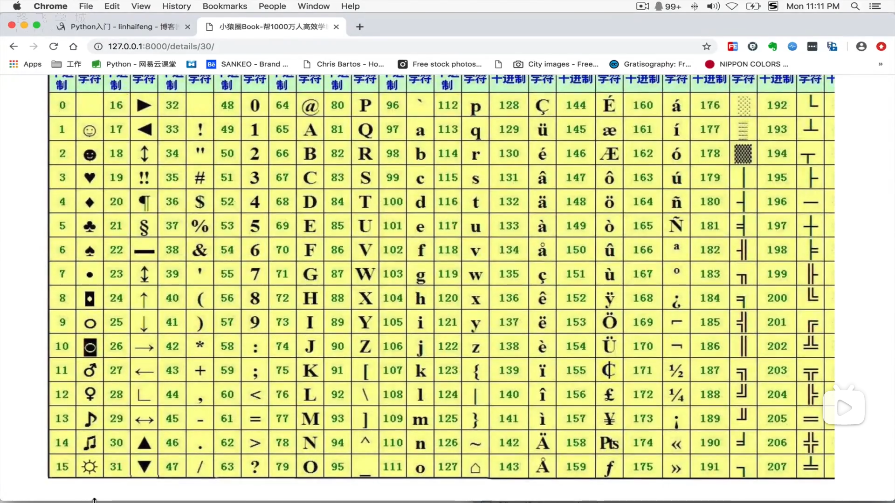

读取
name=input("请输入你的名字")
age=input("请输入你的年龄")
print(name)
print(age)//注意使用input，输入的所有数据都是按照字符串来处理。输出好看的文本
name=input("请输入你的名字")
age=input("请输入你的年龄")
mag='''
-----------start------------
Name=%s//%s是占位符，%s代表的是字符串，因为input，输入的字符串都是字符串类型，所以用%s进行占位，如果是数字采用%d，如果是浮点型采用%f
age=%s
-----------end--------------
''' %(name,age)
print(mag)//
在运行这个程序的时候，发现了一个问题，就是if语句，后面要记得加：号。
if question=="y" or question=="Y":
print("jajajajajjaja")运算符
a**b，表示的是a的b次方
a//b,表示的是a除了b的值的整数部分
and 表示&
or 表示！
not 表示！缩进
首级代码必需顶行写
二级代码要进行缩进，官方要求是4个空格多个if分支
if elif else一个猜随机数的小游戏
调用random模块 import random
n=random.randint(0,10)
s=int(input("输入一个数"))
if s>n:
print("input smaller......")
elif s<n:
print("input bigger....")
else:
print("you are right")
print(n)修改了一下，让他能持续进行直到，相等
import random
s=-1
n=random.randint(0,10)
while s!=n:
s=int(input("输入一个数"))
if s>n:
print("input smaller......")
elif s<n:
print("input bigger....")
if s==n:
print("you are right")
print(n)最多猜三次：
import random
count=0
n=random.randint(0,10)
while count<3:
s=int(input("输入一个数"))
if s>n:
print("input smaller......")
elif s<n:
print("input bigger....")
else:
print("you are right")
print(n)
exit()
count+=1
print(n)升级版本
import random
count=0
n=random.randint(0,10)
def xunhuan():
count = 0
while count<3:
s=int(input("输入一个数"))
if s>n:
print("input smaller......")
elif s<n:
print("input bigger....")
else:
print("you are right")
print(n)
exit()
count+=1
xunhuan()
shuru=input("你还想继续吗")
if shuru=="n" or "N":
exit()
while shuru =="y" or "Y" :
xunhuan()
shuru = input("你还想继续吗")//暂时没想起来更好的解法，就调用了一下函数break和contiune
这两个在当时学习c++的时候都不怎么清楚，现在稍微明白一点。这两个必需是跟着循环出来的，for和while如果不是循环会报错break:中止循环
contimue：中止本次循坏
a=0
while a<100:
a+=1
if a==50:
break
print(a)//输出0~49//
a=0
while a<100:
a+=1
if a<50 and a>40:
continue
print(a)//40~50没有打印出来一道简单的计算题
n=int(input("输入一个数")) s=2 sum=0 while s<=n: if s%2==0: sum=sum+s else: sum=sum-s s+=1 print(sum)//计算2-3+4-5......-或+n打印一个图像
*
**
***
****
*****
****
***
**
*//
i=1
while i<=9:
if i<=5:
print("*"*i)
else:
print("*"*(10-i))
i+=1//升级
i=1
n=int(input("输入一个数字"))
while i<=(2*n-1):
if i<=5:
print("*"*i)
else:
print("*"*(2*n-i))
i+=1死循环
while true双色球
red_list=[]
blue_list=[]
while len(red_list)<6:
num=int(input("请输入第%s个数:"%(len(red_list)+1)))
if num>1 and num<16:
if num not in red_list:
red_list.append(num)
else:
print("该数字存在，请重新输入")
else:
print("该数超出范围")
while len(blue_list) < 2:
num = int(input("请输入第%s个数："%(len(blue_list)+1)))
if num > 1 and num < 8:
if num not in blue_list:
blue_list.append(num)
else:
print("该数字存在，请重新输入")
else:
print("该数超出范围")
print ("红球：")
print(red_list)
print ("篮球")
print(blue_list)确定和判断变量类型
type():确定是什么类型
is ：type() is XXX是的返回true，不是返回false
is not:type() is not XXX (字符串：str)三元运算符
原来：
a=10;b=20;if a> 100: c=a else: c=b
现在：
a=10;b=20;c=a if a>100 else b
c=值1 if 条件 else 值2
列表的曾删改查
增：append，追加在最后。name.append(元素)
insert：指定位置插入。name.insert(索引，元素)
extend：合并两个列表name.extend(列表)
还有个嵌套列表
name=[“q”,”w”,”e”]
name.insert(2,[1,2,3])
name=[“q”,”w”,[1,2,3],”e”]
name[2][2]=3
删：
clear：清空，liebiao.clear()
pop:删除并返回删除元素。name.pop(),删除最后一个并返回该元素，name.pop(索引)，删除指定元素并返回该元素
del：直接删。del name[2] name=[“q”,”w”,”e”]
remove：如果该元素重复，删除从左到右数的第一个元素，name.remove(元素)，如果remove的元素不存在，则返回错误
修：就直接对着元素索引修改
name[1]=”a”
name=[“a”,”w”,”e”]
name[-1]=”h”(倒着数，第一位是-1)
name=[“a”,”w”,”h”]
查：index：查下标，如果查询的元素在列表中没有，返回错误，name.index(元素).补充，name.index(元素，开始的索引 默认是0，结束索引 默认为字符串的长度)
count：统计该元素出现的次数，name.count(元素)
如果想判断，列表中，有没有某个元素，我们可以使用： 元素 in 列表 如果有返回true 如果没有返回false
切片
正切片：可以同时取出多个元素，name=[1,2,3,4,5]
name[1:3]=[2,3] (顾头不顾尾，就是他只能包含最开始的所引所代表的元素，最后面的元素不包含，也就是说start：end-1)
name[1:-1]=[2,3,4]
name[:2]=[1,2]
name[1:]=[2,3,4,5]
倒着切：
因为，python默认是从左到右，所以我们应该写name[-4:-1]=[2,3,4]
name[-4:]=[2,3,4,5]
步长：步子的长度，默认是1，其实name[1:-1]的全名应该是name[1:-1:1].
如果我们想把列表倒着输出2，我们可以使用name[::-1]
上面讲的倒着切，其实我们也可以这个子写：name[-1:-4:-1]=[4,3,2]
我们也可以跳着切name[1::2]=[2,4]
其实用这种方法字符串也可以实现反转：a=”hello” a[::-1]=’olleh’
反转原列表
我们知道，可以使用切片的方法实现列表的反转，但我们始终没有改变源列表，正经的改变源列表的方法是reverse name.reserve() name=[5,4,3,2,1]排序
用的是sort这个函数，从小到大排列。name=[1,4,3,4,2,5] name.sort() name=[1,2,3,4,4,5]
排序只能字符串和字符串，数字和数字在一起排列，字符串的排列依靠下面的那张表

s=[‘@’,’4’,’&’,’ASFD’,’‘],s.sort() s=[‘&’, ‘4’, ‘@’, ‘ASFD’, ‘‘]
for循环
for i in s:
print(i)
&
4
@
ASFD
_
元组
只读列表，曾删改查中只有查可以工作，其他跟列表一样。另外列表用的是[],元组用的是(),比如name=(1,2,3)元组本身不能修改，如果元组中存在可修改的数据类型，那么该数据可以被修改：name=(1,2,3,[4,5]) name[1]=5 报错 name[3][1]=”hi”,成功修改
字符串
是有下标，有序的，然后它相当于一个列表，也是只能读，不可修改的，他也可以进行切片，他也有步长。将一个字符串颠倒a=”hello” a[::-1]=’olleh’
可以进行两个字符串相加，如果有特殊字符，需要转义，如果name=‘cky\n’，print(name)=cky
//空行
如果想要转义，可以，name=r’cky\n’,r是原生字符的意思，此时print（name）=’cky\n’
一些常用的函数
capitalize()首字母大写casefold（）把大写都变成小写
center()补两边的长度，具体name=‘cky lsy’ name.center(50,”^”) ^^^^^^^^^^^^^^^^^^^^^cky lsy^^^^^^^^^^^^^^^^^^^^^^
count()统计某个字符在该字符串中有几个，count(字符，字符，开始的索引 默认是0，结束的索引 默认是字符串的长度)
endswith（）判断以什么结束，正确返回true，错误返回false
find()查找一个字符，并返回第一个找到的索引值，跟列表的index差不多。find（字符，开始的索引 默认是0，结束的索引 默认是字符串的长度），如果没有找到返回-1
format:相当于占位符 %s，但是这个不许要%s的一一对应的关系。
name=’{0}.1 {1}.1 {0}.2 {1},2’
name.format(‘no’,’NO’)
‘no.1 NO.1 no.2 NO,2’
或者话可以，name=’{name}.1 {name1}.1 {name}.2 {name1},2’
name.format(name=’no’,name1=’NO’)
声称字典：c=dict(name=’’)
添加：c[‘age’]=20
添加key：c=dict.fromkeys(你要的key列表)
update，合并，a.update.(c),如果c中有a存在的key，则覆盖a的values值
查：get
a.get(‘key’)如果存在，返回value，如果不存在，不返回
a.get(‘key’,-1)如果不存在返回-1
a.keys()返回所有的键值，a.values()返回所有的值，a.items()返回所有的键值和值
循环
for i in a:
print(i)
for i in a:
print(i,a[i])
for i in a.items():
print(i)
for i,j in a.items():
print(i,j)
集合
无序，不能重复，不可变
一个小例子，找出a，b中重复的元素，并将其存入c中
a=[1,2,3,12,434,56,23,12,2]
b=[1,23,45,2,34,56,23,45,2]
c=[]
for i in a:
if i in b:
c.append(i)
去重：如果a={1，3，4，1，2，3，4，1}，那么回车后，a={1,2,3,2},自动去重，如果
a=[1,2,3,1,2,12,3]是个列表，可以用c=set(a),就可以了，set是英文集合的意思，
c={1,2,3,12}
增加：add a.add(元素)，钙元素一定是不可以改变的类型，列表，字典都有不可以，元组
是可以的，如果添加的元素该集合中有了，就不可以添加进去了，但是不会报错
删除：discard，a.discard(元素)，如果该元素不存在也不会报错
pop，a.pop()随机删除，实验几遍不像是随即删除，感觉是从头开始删除，每次删一个
remove：跟discard一样。只不过就如果删的是里面没有的，会报错
&：求两个集合的相同的元素a{1,2,3,4,5},b={2,3,4,5,6}a&b={2,3,4,5}
|:求两个集合的合集a|b={1,2，3，4，5，6}
-：如果a中存在b中的元素，b-a={6}
^:踢出去两者中都有的元素，a^b={1,6}
判断是不是相交：isdisjoint
判断是不是子集：issubset
判断是不是父集：issuperset
intersection：将两个集合中相同的元素取出来，就跟&一样
difference_update():相当于a=a-b
2**4=16，就是2的4次方
bin（数字），把十进制换成二进制
hex（数字），就是将十进制转换成16进制
ord（符号），查询acsii吗
hash
这种转换是一种压缩运算，不能通过结果推算输入，不可逆算法，具有加密特性
特行：补课你，计算快
作用：密码，数字签名，文件完整性校检
基于hash的两个数字类型：dict，set
set天生去重也是因为hash
dict之所以查询速度很快，所采用的是hash和二分法
用python操作文件
1.f=open(file=’文件名’，mode=’w\r\a’),这个文件在你的python中声称
2.f.read()度全部，f.readline()读一行，f.readline(想读多少字)，f.readlines()将全部以字符串的形式输出，f.read(想读多少字)
3.追加模式，也是以写的方式进行
4.write，f.write(想写的字)
三种模式不能混合
循环文件
a=open(file=’文件名’)
for line in a:
print(line)
此时会出现，每行之间都有空格，所以我们可以使用print（line.strip()）去掉空行
还可以使用，line.split(),将每行变成字符串，这样我们可以更好地筛选信息
循环从1-100：可以用函数range（100）
文件操作的其他模式：
f.seek（）：移动开始的光标，python3默认使用gbk编码，一个中文是两个字节，一个英文字母是1个字节，a.seek(2)
意思是从第二个中文开始
f.flush()强制将内存里的东西刷入硬盘：平时只有在f.close()之后，才可以在内存中看到新写入的文件，使用flush可以直接看到
f.readable()判断是否可读
f.tell()返回光标的位置
f.truncate(数字)，从0接到100，如果是f.truncate()表示从0接到光标处，可用于日志截断
f.writelines()项文件中写入内容，是字符串
混合模式有三种
a+：追加读，光标回到尾部，可以使用seek（0）使光标回到开始
w+：没用
r+:读加写，相当于追加的效果，加载尾部，光标回到开始
修改文件
f=open(‘’,’r+’)
f.seek()从第几个字符开始
f.write(),直接覆盖其他字符
不占内存的修改文件
import os
old_file=”hello.txt”
new_file=”new.txt”
f=open(‘hello.txt’,’r+’)
f_new=open(‘new.txt’,’w’)
old_str=’wo’
new_str=’ni’
for line in f:
if ‘wo’ in line:
line=line.replace(old_str,new_str)
f_new.write(line)f.close()
f_new.close()
os.replace(new_file,old_file)
写一个脚本，使得，当我们输入新的字符串，被替换的字符串，以及文件名，就会进行替换
import sys
import os
a=sys.argv
old_file=a[3]
new_file=”new.txt”
f=open(a[3],’r+’)
f_new=open(‘new.txt’,’w’)
old_str=a[1]
new_str=a[2]
for line in f:
if a[1] in line:
line=line.replace(old_str,new_str)
f_new.write(line)f.close()
f_new.close()
os.replace(new_file,old_file)
f=open(a[3],’r’)
print(f.read())
作业：设置一个登陆注册，如果登陆三次没有成功，就锁定用户：
c=0
answer=input(‘这是我们的网站，您是登陆还是注册：’)
if answer==’注册’:
f=open(‘记录表’,’a+’)
shujv=input(‘请输入您的用户名和密码，用空格隔开:’)
shujv=shujv.replace(‘ ‘,’’)
f.write(shujv)
f.write(‘\n’)
f.close()
if answer==’登陆’:
def xunhuan():
shujv = input(‘请输入您的用户名和密码，用空格隔开:’)
shujv = shujv.replace(‘ ‘, ‘’)
f = open(‘记录表’, ‘r’)
c = 0
for line in f:
if shujv in line:
if len(shujv) == len(line):
print(‘登陆成功’)
exit()
f.close()
print(‘登陆失败，请重新登陆’)
c += 1
while c<3:
xunhuan()
c+=1
if c >=3:
print(“账号已经被锁定”)
exit()
光标从第二行开始读文件，是next（f）
本来说是查股票的
为了简便就用了成绩，感觉这样也行
f=open(‘股票.txt’,’r’,encoding=’utf-8’,errors=’ignore’)
keys=[]
zidian={}
zidian1={}
diyipai=f.readline()
liebiao=[]
diyipai=dict(diyipai.split())
while True:
for line in f:
line = list(line.split())
zidian[line[0]] = line
qingqiu = input(“模糊查询：”)
for k, v in zidian.items():
if qingqiu in k:
print(v)
f.seek(0)
next(f)
a = input(“你想筛选成绩的科目”)
c = 0
for k in diyipai.keys():
if k in a[0]:
break
c = c + 1
b = int(input("你想筛选成绩"))
for line1 in f:
line1 = line1.split()
if int(line1[c]) >= b:
print(line1)升级版本：
f=open(‘股票.txt’,’r’,encoding=’utf-8’,errors=’ignore’)
keys=[]
zidian={}
zidian1={}
diyipai=f.readline()
liebiao=[]
diyipai=dict(diyipai.split())
while True:
for line in f:
line = list(line.split())
zidian[line[0]] = line
qingqiu = input(“模糊查询：”)
def hanshu():
global qingqiu
for k, v in zidian.items():
if qingqiu in k:
if len(qingqiu) == 0:
qingqiu = input("不能是空白请重新输入:")
hanshu()
return//重要的是，为什么把return加到了这里，如果不加return，则会返回我打了几个空白，就有几条数据，想不明白
else:
print(v)
hanshu()
f.seek(0)
next(f)
a = input("你想筛选成绩的科目:")
c = 0
for k in diyipai.keys():
if k in a[0]:
break
c = c + 1
b = int(input("你想筛选成绩:"))
for line1 in f:
line1 = line1.split()
if int(line1[c]) >= b:
print(line1)高阶函数
满足条件：把函数当作参数传入，或者返回一个函数
def jieduizhi(n):
return int(str(n).strip())
def add(x,y,f):
return f(x)+f(y)
print(add(30,-14,jieduizhi))
def qvyvshu(n):
a=-n
return a
print(add(30,18,qvyvshu))
def add1():
return add(10,12,jieduizhi)
print(add1())